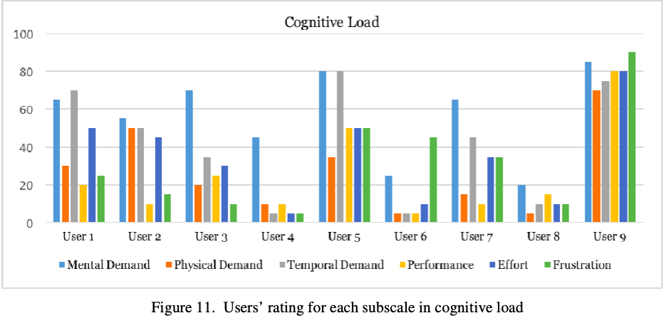

| Home | 1 | 2 | 3 | 4 |
A Fitness Mobile Applications ‘Twazon’
Twazon is a Saudi Arabic health and fitness app, designed by academics to combat obesity in Saudi Arabia. The app tracks calorie intake and exercise as well as providing educational information to encourage healthy eating and behaviour. The main feature setting the app apart from any other is that it draws all of its food plans and recommendations from a database of Saudi foods.
In researching usability testing of this app a variety of literature was found and used to form the basis of the following analysis, the first article that was examined was about the development of the app including the evidence that the app is based on and employs and the features, layout and operation of the app. Usability was also tested and documented in this article. A second article was also referenced this article detailed more rigorous independent usability testing of the Twazon app using a range of different metrics.
The user experience of the Twazon app is predominantly negative
as see in the results of
The Twazon app development focused on access to a Saudi-food
based meal planner and following their evidence-based weight loss practice. The
developers outline just how they intended to implement this throughout
Part of their testing saw experts in the health and nutrition industry use the app for a week and provide feedback. This testing was very good to validate the heath information however no focus of this was on the usability or user experience. This highlights a fundamental flaw in their approach to the development of the app, they used good information, but they focused only on providing access to that information and overlooked how the information was accessed and its use.
The
independent usability testing detailed in
The Twazon apps developers did conduct a second style of user testing however it did not consider the usability attributes and factors as the independent testing did. The developers testing also did not use measurable metrics instead just asking the participants for questions and collecting qualitative data in the form of verbal feedback. They also did not iterate in their testing phase having just the two different groups try the single version of software. In all this again highlight what led to the poor UX of this app, the apps development focused on the functionality of the system rather than being developed with the attributes of usability strongly considered. A more human centred approach would have likely improved the user experience.
The variety of source material gave unique insight to the
product especially its conception and implementation. Using the developers
article helped grasp what their intentions and their goals were for the product,
it showed where they could have adjusted their implementation to produce a
better experience for the end user. One unique perspective that this article
allowed was to see some of the mindset and misaligned focus that likely led to
the apps negative UX. “Moreover, the majority [of participants] felt that the
app needed to be even easier and should offer a detailed explanation on how to
use the app.”
The use of the independent testing was also highly valuable
as it supplied a stark contrast between comprehensive usability testing and the
very limited testing in
|
[1] |
R. G. V. &. A. R. Alturki, " Usability testing of
fitness mobile application: methodology and quantitative results.," Proceed.
Int. Confer. Computer Sci. Engineer. Applic, pp. 97-114, 2017. |
|
[2] |
A. S. A. A.-K. A. &. M. D. Alnasser, "
Development of 'Twazon': An Arabic App for Weight Loss.," JMIR
research protocols, vol. 5 , no. 2, p. e76, 2016. |